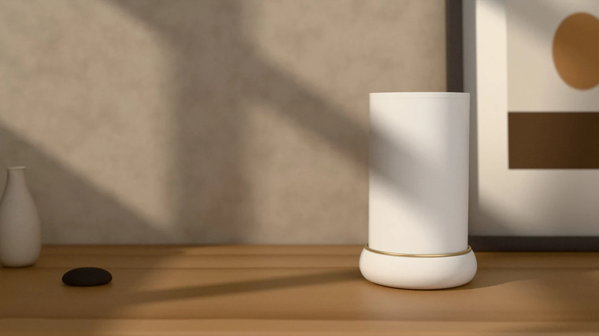
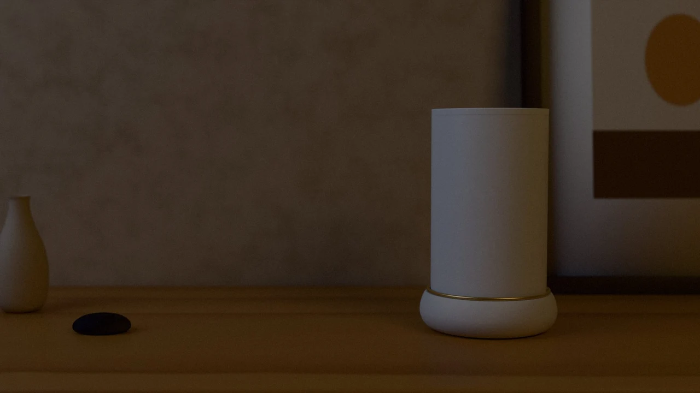
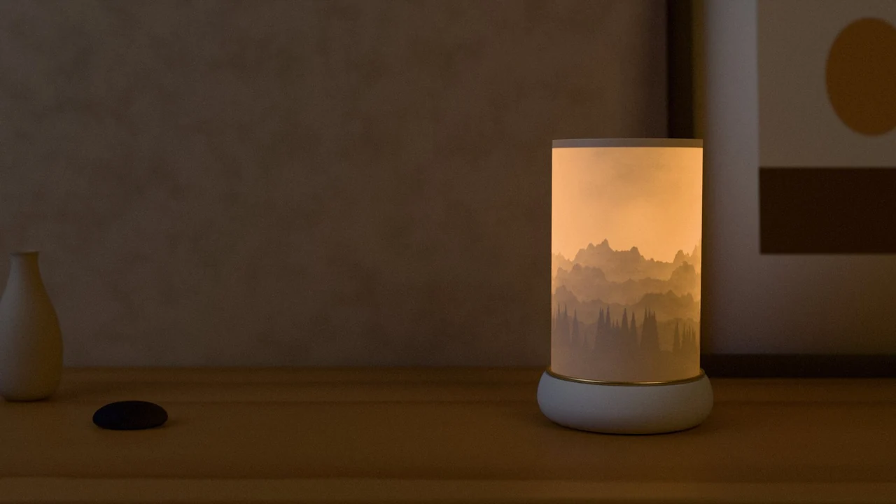
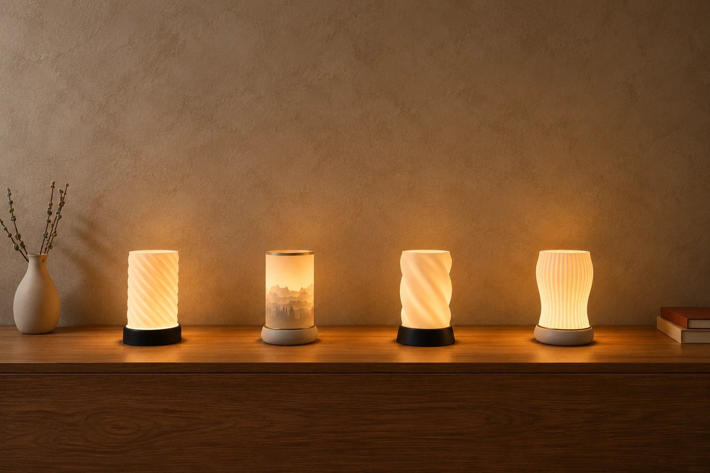
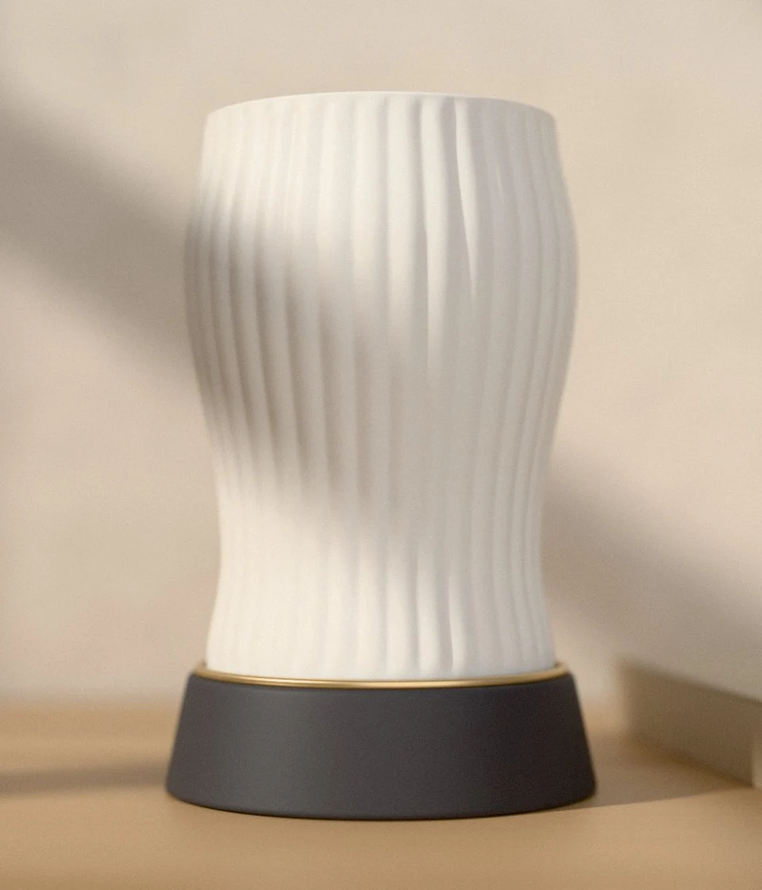

LITOFANIE / GALETZiua
Un obiect de design,
chiar și stinsă.

Lumină cu o poveste
Lămpi printate 3D · asamblate manual în România
01 — O altă atmosferă
Ziua, un obiect de design.
Seara, motivul pentru care mai rămâi puțin.



LITOFANIE / GALETZiua
Un obiect de design,
chiar și stinsă.
02 — Colecția Lumis
Tu alegi forma, soclul și culoarea.
Noi le aducem împreună.
Deschide un model pentru configurarea 3D. Pe desktop, treci peste imagine pentru varianta de zi.

Textură fină. Lumină blândă.03 — În felul tău
O formă care îți place. O culoare care se așază firesc în camera ta. Sau o fotografie pe care vrei s-o păstrezi aproape.
Alegi și personalizeziSoclu, culoare, inel. Iar pentru litofanie, fotografia ta.
Vezi înainte să printămPentru litofanie primești previzualizarea pe e-mail și o aprobi.
Gata să-și găsească loculAsamblată, testată și ambalată ca un cadou.